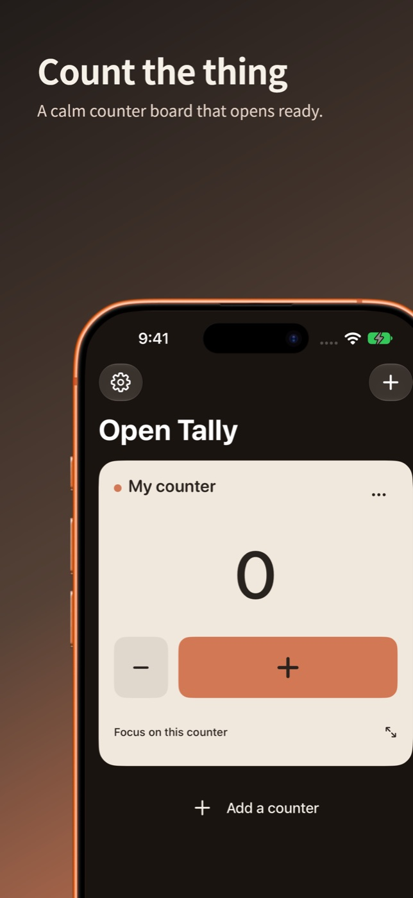
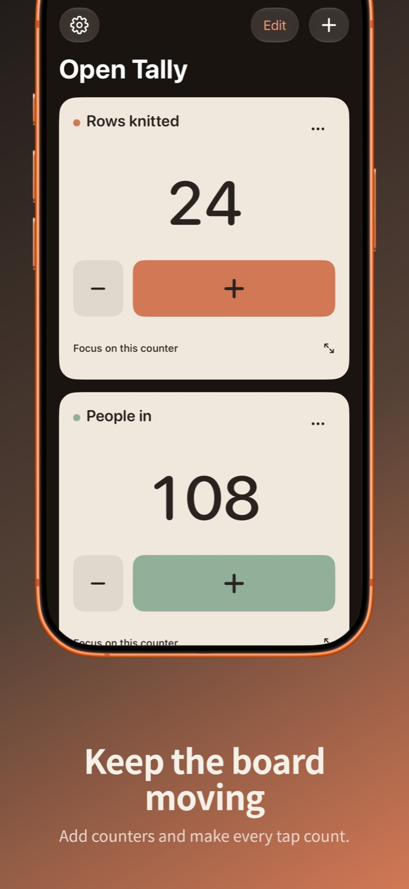
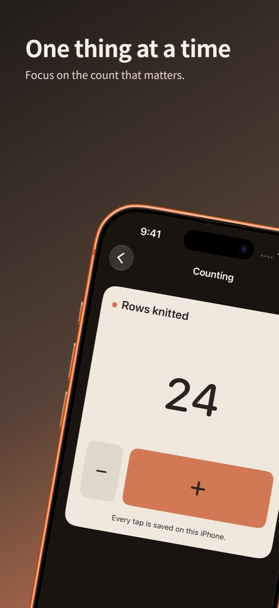

“Demands $13 every time I open the app.”
Count That Now on the App Store
What Open Tally does instead
Every counter and board feature is there when you open it. Nothing nags you to pay.
Open AppCo app #2
A tally counter that opens ready to count.
Live on the App Store. Collect feedback and maintain.
The actual app



Physical-device check
The submitted build running on a real iPhone.
Why this app exists
“Demands $13 every time I open the app.”
Count That Now on the App Store
Every counter and board feature is there when you open it. Nothing nags you to pay.